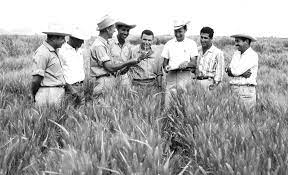

Dr. Norman Borlaug, third from the left, trains biologists in Mexico on
how to increase wheat yields - part of his life-long war on hunger.
Here's a time line of Dr. Borlaug's life:
1914 - Born in Cresco, Iowa
1933 - Leaves his family's farm to attend the University of Minnesota, thanks to a Depression era
program known as the "National Youth Administration"a
1935 - Has to stop school and save up more money. Works in the Civilian Conservation Corps, helping
starving Americans. "I saw how food changed them", he said. "All of this left scars on me."
1937 - Finishes university and takes a job in the US Forestry Service
1938 - Marries wife of 69 years Margret Gibson. Gets laid off due to budget cuts. Inspired by Elvin
Charles Stakman, he returns to school study under Stakman, who teaches him about breeding
pest-resistent plants.
1941 - Tries to enroll in the military after the Pearl Harbor attack, but is rejected. Instead, the
military asked his lab to work on waterproof glue, DDT to control malaria, disinfectants, and other
applied science.
1942 - Receives a Ph.D. in Genetics and Plant Pathology
1944 - Rejects a 100% salary increase from Dupont, leaves behind his pregnant wife, and flies to
Mexico to head a new plant pathology program. Over the next 16 years, his team breeds 6,000
different strains of disease resistent wheat - including different varieties for each major climate
on Earth.
1945 - Discovers a way to grown wheat twice each season, doubling wheat yields
1953 - crosses a short, sturdy dwarf breed of wheat with a high-yeidling American breed, creating a
strain that responds well to fertilizer. It goes on to provide 95% of Mexico's wheat.
1962 - Visits Delhi and brings his high-yielding strains of wheat to the Indian subcontinent in time
to help mitigate mass starvation due to a rapidly expanding population
1983 - helps seven African countries dramatically increase their maize and sorghum yields
1984 - becomes a distinguished professor at Texas A&M University
2005 - states "we will have to double the world food supply by 2050." Argues that genetically
modified crops are the only way we can meet the demand, as we run out of arable land. Says that GM
crops are not inherently dangerous because "we've been genetically modifying plants and animals for
a long time. Long before we called it science, people were selecting the best breeds."
2009 - dies at the age of 95.
"Borlaug's life and achievement are testimony to the far-reaching contribution that one
man's towering intellect, persistence and scientific vision can make to human peace and progress."